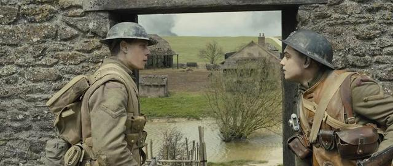

解读电影《1917》
最近奥斯卡大火，虽说《1917》落选了最佳影片奖，但此片绝对是上佳之品。
我在看这部片子的时候给我一种沉浸式的感觉，似乎自己在玩荒野求生（原谅我的电竞梦想哈哈），我想这也是导演萨姆·门德斯达到了目的，因为这个片子采用了多个一镜到底的镜头，不过也不能准确定义为一镜到底，这也许是导演跟我们玩的伪装术。
萨姆·门德斯说：“这部电影的设计初衷就是一个镜头。从一开始我就想以实时方式拍这部电影，让观众一同踏上旅程，与角色同步呼吸，一镜到底是讲述这个故事的最好方法。”还有就是片子的剪辑及音效真的是太棒了，在音效方面，个人觉得《星际穿越》是神来之笔，那么《1917》也几乎做到了毫无斧凿痕迹。
故事线极其简洁：讲述的就是两个士兵要在8小时内穿越敌对区，去向前线送出一封信，以此拯救1600条生命。 多像是一个游戏桥段，要突破层层关卡，最后打完通关，这让观众有一种很强烈的沉浸感，让你欲罢不能。
欧美国家的导演对于讲故事显然不是很擅长，但是对于故事的节奏和紧迫感把握的很不错，《1917》的空间是“一条线”，就像挖的壕沟那样朝着一个方向去走，而这次荣获大胜的《寄生虫》的空间是“上下结构”，讲的是贫富差距的问题。
而《1917》的单线叙事、一镜到底的设定，将一战中的两个底层士兵纳入到一个从起点到终点的时间任务中，首先，他俩要完成的动作远远大于对一战绞肉机的残酷与荒诞的时空体验。
由于镜头需要紧张地跟进人物动作，影片中极少出现能加强心理叙事的特写镜头。特别是在影片的前半部分，大量的360度跟拍在两个人物间交替，却没有试图进行视点叙事。我觉得这个恰好是电影的可贵之处，对于剧中故事线来说，两位底层士兵要在短时间内突破危险禁地，将消息传递出去，是没有必要来描述一些事情，对于演员本身来讲，他们沉浸在角色中，唯一的任务就是：完成任务，不容有任何闪失。
当士兵布雷克的突然身亡，对任务不积极、不苟言笑的Schofield成为叙事动作接力的唯一主体，追踪人物的运动镜头开始出现明确的视线调度和特写景别。独立行动的斯科菲尔德似乎获得了影像的主体性，他不断遇到陌生人：搭车士兵、给建议的长官、法国少女、林中听歌的英兵、白色战壕里的各位长官，每一次他对别人重复自己的使命，都得到陌生人的刺激，因为其实没有人相信他能完成这样的任务，甚至很多人包括最后接受指令的上校都认为任务本身的价值亦可置疑。
斯科菲尔德的任务与陌生人对于战争看法形成内在冲突，成为新的叙事动力，而不是穿越战场的动作本身。影片在后半部分进入到了导演萨姆·门德斯一贯的电影主题：个体存在的价值恰恰在于对庸常的恐惧、绝望与反抗中，对于战争的恐慌和绝地反击，一切都是为了胜利。
《1917》的结尾，斯科菲尔德经过种种不可预测的生死空间，阴差阳错地赶到战场，竟然不算太晚地完成了任务，阻止了一场进攻。